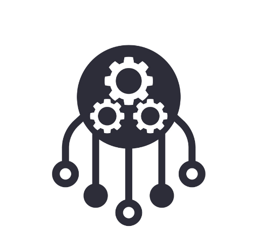
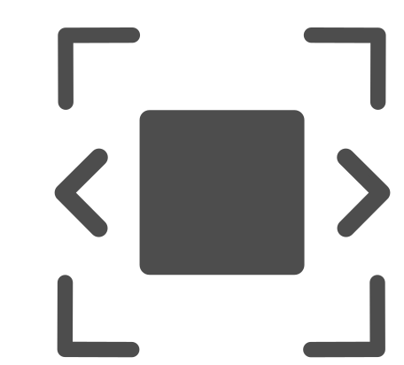
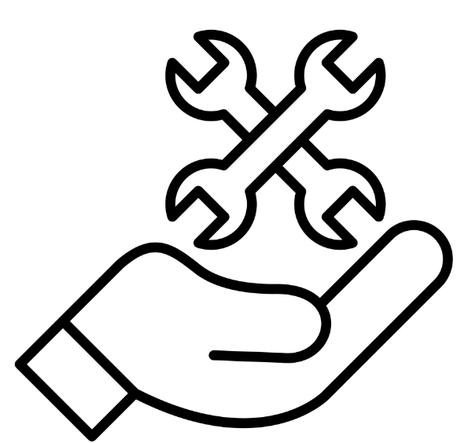
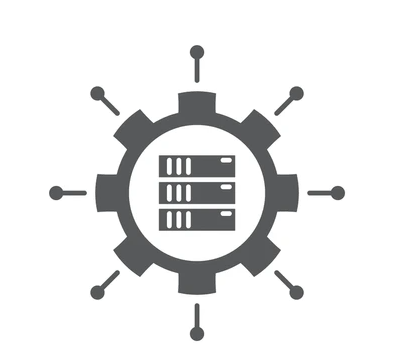
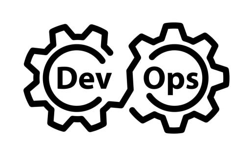

Key Features

Intelligent Resource Allocation
Jupiter analyzes resource usage patterns and predicts future demand to optimize the allocation of computing resources. By dynamically adjusting server capacity based on workload fluctuations, it ensures optimal performance while minimizing wasted resources.

Automated Scaling
The platform automatically scales infrastructure resources up or down in response to changing demand, allowing businesses to efficiently handle spikes in traffic without over-provisioning. This not only saves costs but also ensures consistent performance during peak periods.
Cost Optimization
Jupiter continuously evaluates the cost-effectiveness of different infrastructure configurations and recommends adjustments to minimize expenses. It identifies opportunities for resource consolidation, rightsizing instances, and leveraging spot instances or reserved capacity to maximize savings.

Predictive Maintenance
Leveraging machine learning algorithms, Jupiter analyzes telemetry data from servers and networking equipment to detect potential hardware failures before they occur. It proactively alerts administrators and recommends preventive measures, reducing downtime and maintenance costs.
Policy-Based Governance
The platform allows administrators to define policies and rules for infrastructure provisioning and management. This ensures compliance with security, performance, and budgetary requirements while providing flexibility for different use cases and business needs.

Centralized Management Dashboard
Jupiter provides a user-friendly dashboard that gives administrators a holistic view of their infrastructure deployment. They can monitor resource utilization, cost trends, performance metrics, and compliance status in real-time, enabling informed decision-making and troubleshooting.

Integration with DevOps Tools
Jupiter seamlessly integrates with popular DevOps tools and platforms, such as Kubernetes, Docker, Terraform, and Jenkins. It streamlines the deployment pipeline, automates configuration management, and facilitates continuous integration and delivery (CI/CD) processes.